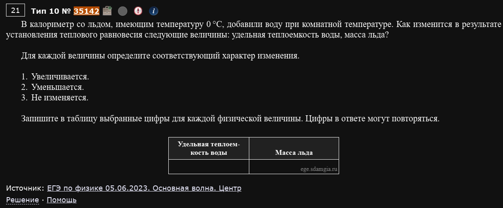
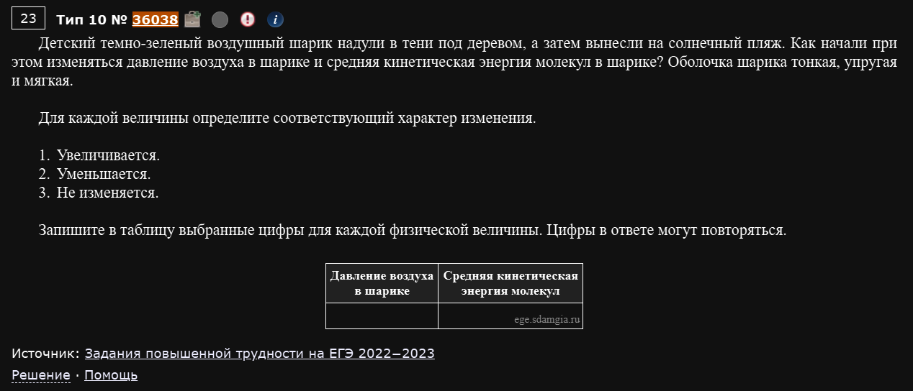
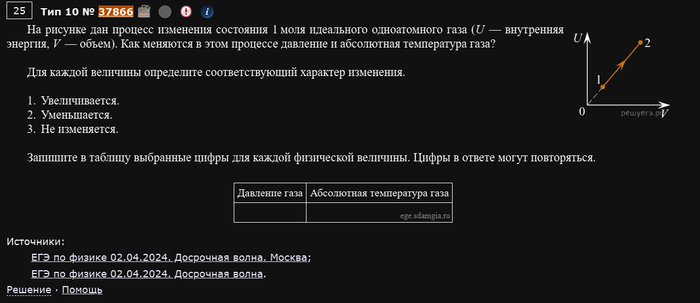
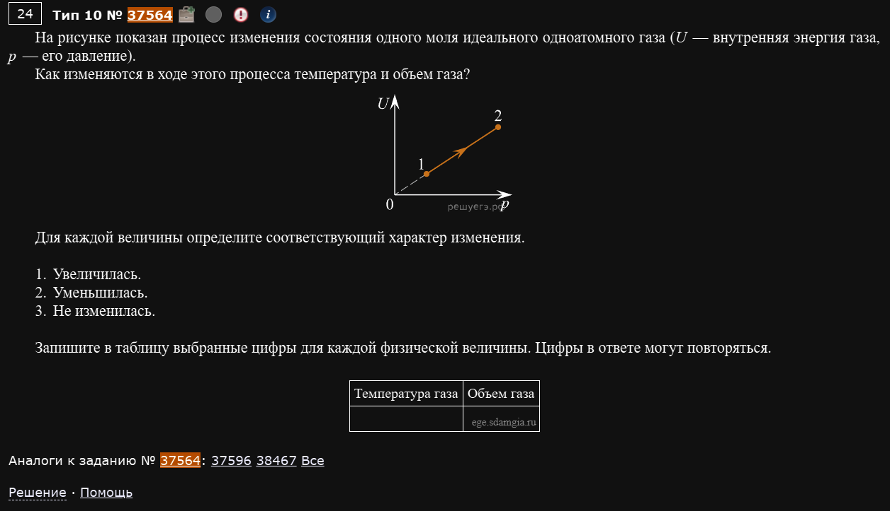
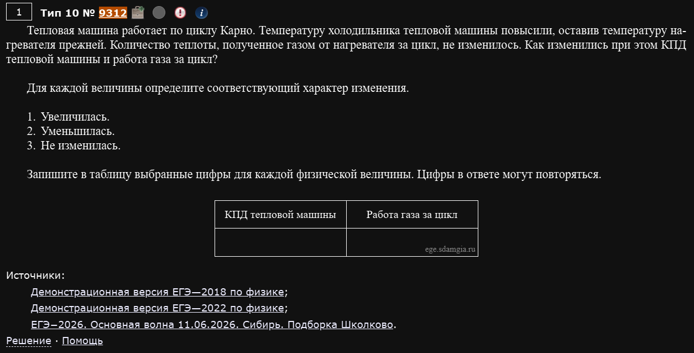
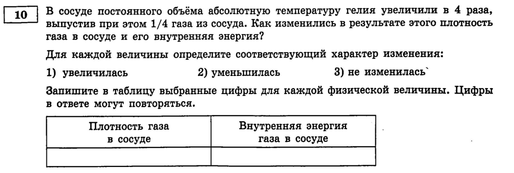
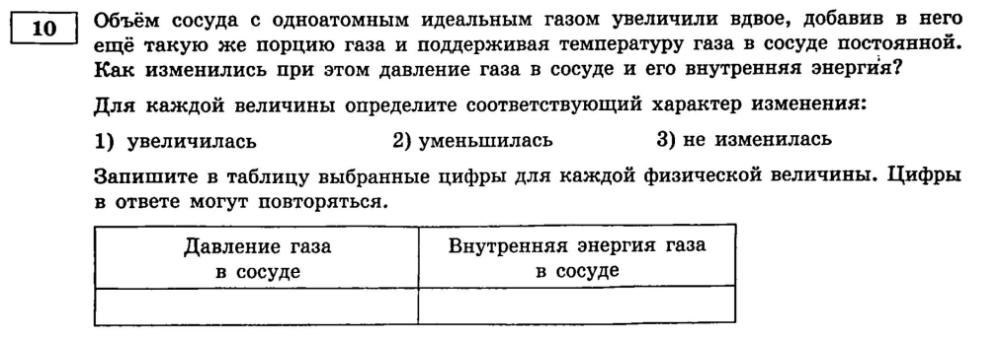

Разнообразие
Поскольку завершающие задания невероятно разнообразные по ситуациям и темам, которые в них задействованы - здесь разбираются только те задачи, благодаря которым у вас сформируется понимание про что вообще этот номер.
№10. МКТ и термодинамика: как меняются величины
Тот же формат, что и в номере 6 (увеличится/уменьшится/не изменится, реже — установление соответствия), только материал теперь молекулярная физика и термодинамика: газовые законы, первый закон термодинамики, фазовые переходы, циклы тепловых машин.
Пример 1) (Решу ЕГЭ №35142 — ЕГЭ по физике 05.06.2023, Центр)

В калориметр со льдом, имеющим температуру 0 °C, добавили воду при комнатной температуре. Как изменятся в результате установления теплового равновесия следующие величины: удельная теплоёмкость воды, масса льда?
Ловушка в самой формулировке: удельная теплоёмкость — это характеристика вещества (свойство самой воды), а не результат опыта. Она не меняется ни при каких обстоятельствах, пока это всё та же вода.
А вот масса льда — это реально меняющаяся величина: тёплая вода отдаёт часть своей энергии на плавление льда, значит какая-то часть льда растает. Масса льда уменьшается.
Ответ: удельная теплоёмкость — не изменилась (3), масса льда — уменьшилась (2).
Свойство вещества vs. результат процесса
Удельная теплоёмкость, удельная теплота плавления, плотность конкретного материала — это табличные характеристики вещества. Они никогда не меняются “в результате опыта” (если это не смена агрегатного состояния или другое вещество). Не путайте их с массой, объёмом, температурой — величинами, которые как раз и меняются в процессе.
Пример 2) (Решу ЕГЭ №36038 — Задания повышенной трудности на ЕГЭ 2022-2023)

Детский тёмно-зелёный воздушный шарик надули в тени под деревом, а затем вынесли на солнечный пляж. Как начали при этом изменяться давление воздуха в шарике и средняя кинетическая энергия молекул в шарике? Оболочка шарика тонкая, упругая и мягкая.
На солнце шарик нагревается — температура воздуха внутри растёт, а значит растёт и средняя кинетическая энергия молекул () — она увеличивается.
С давлением чуть тоньше: оболочка мягкая и упругая, то есть при нагревании шарик может слегка раздуваться (объём растёт вместе с температурой, а не остаётся жёстко зафиксированным). Но само давление внутри такого мягкого шарика определяется натяжением его оболочки, а не температурой напрямую — и при нагревании давление всё равно растёт (оболочка сильнее растягивается и сильнее давит на воздух в ответ). Давление увеличивается.
Ответ: давление — увеличивается (1), средняя кинетическая энергия — увеличивается (1).
Пример 3) (Решу ЕГЭ №37866 — ЕГЭ по физике 02.04.2024, досрочная волна)

На рисунке дан процесс изменения состояния 1 моля идеального одноатомного газа (U — внутренняя энергия, V — объём). Как меняются в этом процессе давление и абсолютная температура газа?
Необычные оси: график зависимости U от V — прямая линия через начало координат (). Вспомним, что для одноатомного идеального газа . Раз напрямую (без всякого домножения на что-то ещё), то давление обязано оставаться постоянным — иначе пропорция бы не выполнялась.
А раз это изобарный процесс (p=const) и объём растёт (судя по графику) — по уравнению состояния температура тоже растёт.
Ответ: давление — не изменилось (3), температура — увеличилась (1).
Пример 4) (Решу ЕГЭ №37564 — ЕГЭ по физике 02.04.2024, досрочная волна)

На рисунке показан процесс изменения состояния одного моля идеального одноатомного газа (U — внутренняя энергия, p — давление). Как изменяются в ходе этого процесса температура и объём газа?
Зеркальный вариант предыдущего примера — теперь график U от p, и снова прямая через начало координат (). Так как , для того чтобы было прямо пропорционально именно (а не и чему-то ещё), объём должен оставаться постоянным — это изохорный процесс.
Раз объём не меняется, а давление растёт (по графику) — по уравнению состояния температура тоже растёт.
Ответ: температура — увеличилась (1), объём — не изменился (3).
U прямо пропорционально X — значит третья величина постоянна
Примеры 3 и 4 — это один и тот же трюк на разных осях. Формула содержит произведение и . Если график показывает, что растёт ПРЯМО пропорционально одной из этих величин (линия через начало координат) — вторая величина в этом произведении обязана оставаться постоянной, иначе пропорциональность бы нарушилась.
Пример 5) (Решу ЕГЭ №9312 — Демонстрационные версии ЕГЭ-2018 и ЕГЭ-2022 + ЕГЭ-2026, основная волна 11.06.2026, Сибирь)

Тепловая машина работает по циклу Карно. Температуру холодильника машины повышают, при этом температура нагревателя и количество теплоты, которое рабочее тело получает от нагревателя за один цикл, остаются неизменными. Как изменяются в результате этого КПД тепловой машины и совершаемая машиной за один цикл работа?
Температура холодильника растёт, температура нагревателя та же — значит дробь растёт, а КПД уменьшается.
Работа связана с КПД и теплотой от нагревателя (которая по условию не меняется) простой формулой . Раз уменьшилось, а осталось прежним — работа тоже уменьшается.
Ответ: КПД — уменьшается (2), работа — уменьшается (2).
Пример 6) (Демидова 2026, вариант 1)

В сосуде постоянного объёма абсолютную температуру гелия увеличили в 4 раза, выпустив при этом 1/4 газа из сосуда. Как изменились в результате этого плотность газа в сосуде и его внутренняя энергия?
Тут сразу две вещи меняются одновременно (температура и масса газа), а объём остаётся жёстко фиксированным — нужно аккуратно комбинировать пропорции.
Плотность : объём не меняется, а масса газа уменьшилась до от исходной (выпустили четверть) — значит плотность тоже уменьшилась до , то есть уменьшилась.
Внутренняя энергия (количество вещества умножить на температуру): количество вещества стало от исходного, а температура выросла в 4 раза:
Внутренняя энергия увеличилась (втрое).
Ответ: плотность — уменьшилась (2), внутренняя энергия — увеличилась (1).
Когда меняется сразу несколько величин
Если условие одновременно меняет и температуру, и количество вещества (выпустили часть газа, долили ещё) — считайте отношения для каждой величины по отдельности и только потом перемножайте. Не пытайтесь угадать результат “на глаз” — легко ошибиться со знаком, особенно когда эффекты противоположные.
Пример 7) (Демидова 2026, вариант 11)

Объём сосуда с одноатомным идеальным газом увеличили вдвое, добавив в него ещё такую же порцию газа и поддерживая температуру газа в сосуде постоянной. Как изменились при этом давление газа в сосуде и его внутренняя энергия?
Ещё одна ловушка на “два эффекта сразу”. Кажется, что раз добавили ещё газа, давление должно вырасти — но объём тоже вырос, причём ровно во столько же раз.
Давление: . Количество вещества выросло вдвое (добавили такую же порцию), объём тоже вырос вдвое — эти два эффекта ровно компенсируют друг друга. Давление не изменилось.
Внутренняя энергия: . Температура постоянна по условию, а количество вещества выросло вдвое — значит внутренняя энергия увеличилась (вдвое).
Ответ: давление — не изменилось (3), внутренняя энергия — увеличилась (1).
Добавили газа — не значит "давление выросло"
Главный урок этого примера: интуиция “больше газа = больше давления” работает только если объём фиксирован. Как только сосуд одновременно меняет объём, нужно смотреть на ОТНОШЕНИЕ количества вещества к объёму, а не на количество вещества само по себе.